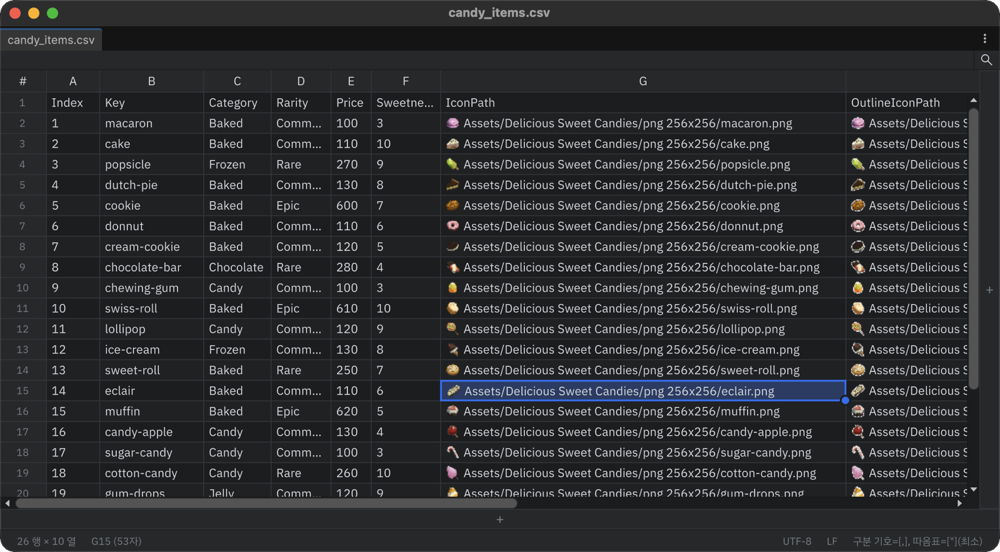
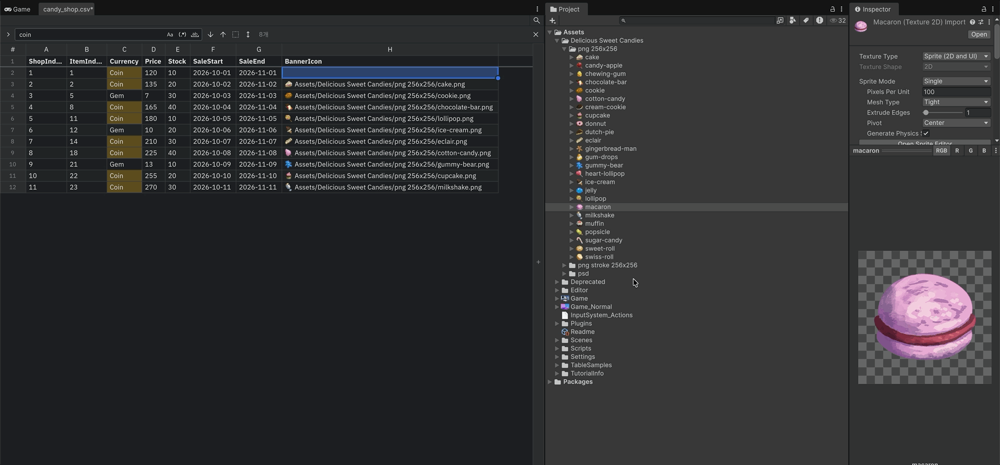
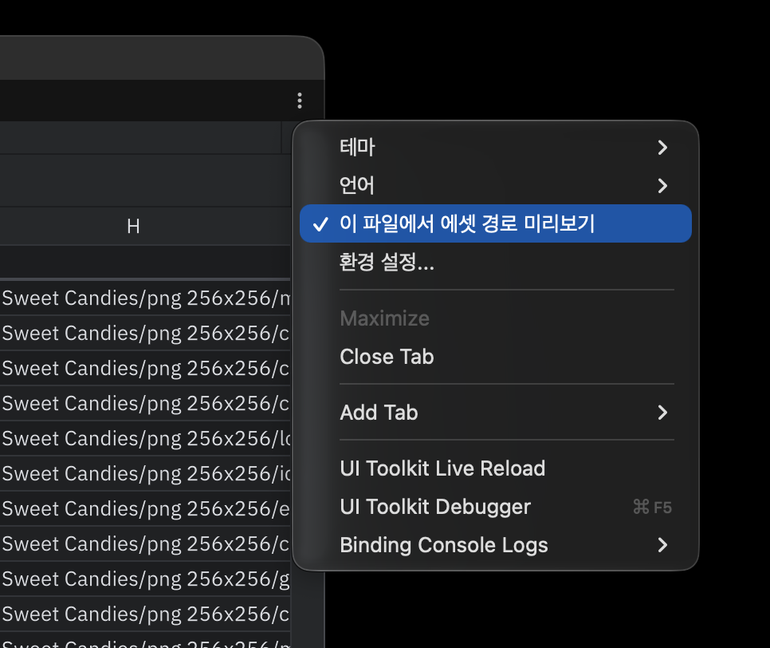

Asset paths
Tabular Editor recognizes columns whose values point to assets, so you can check and enter assets right in the cells.
Recognized values
| Format | Example |
|---|---|
| Resources path (no extension) | Art/Sprite/Buff/spr_buff_1000 → spr_buff_1000.* under any Resources folder |
| Project path | Assets/Art/spr_buff_1000.png, Packages/… |
Tabular Editor looks at up to the first 50 non-empty body cells of a column (header rows excluded). If at least half of them resolve to assets, the column is treated as an asset path column. This is re-checked when a file opens, after edits, and when assets in the project change.
Icons and previews

- Cells in an asset path column show the asset's Project window icon before the text.
- Hover over a cell for a moment to see a preview card. Textures and sprites show a large image and their size; other assets such as prefabs show the icon, type and path (prefabs are not loaded, because loading them can take a while).
- Ctrl+click (Cmd+click on macOS) a cell, or choose Show in Project from its context menu, to ping the asset in the Project window.
Missing paths
In an asset path column, a value that looks like a path (contains /) but resolves to no asset gets a warning icon and red text. Hovering it tells you where Tabular Editor looked.

The left side of the status bar shows N missing asset paths. Each click moves to the next problem cell, wrapping around after the last. Values without / (column titles, None, - and so on) are never flagged.
Drag and drop
Drop assets from the Project window onto a cell to write their paths in the format the column already uses.

| Column | Written value |
|---|---|
| Uses Resources paths | Art/Sprite/Shop/spr_shop_1000 |
| Uses project paths | Assets/…/spr_shop_1000.png |
| Has no paths yet | A Resources path for assets inside Resources, otherwise a project path |
- Dropping several assets fills one cell each, downward from the target cell. The target cells are highlighted while you drag.
- Assets outside a
Resourcesfolder can't be dropped into a Resources path column, becauseResources.Loadcouldn't load them. - One Undo reverts the drop.
Turning it off
| Where | Scope |
|---|---|
| Preferences > Tabular Editor > Asset Path Preview | All files |
| Window ⋮ menu > Asset Path Preview for This File | This file only. Stored in .meta and shared with your team. |
Both must be on for asset paths to be shown.
